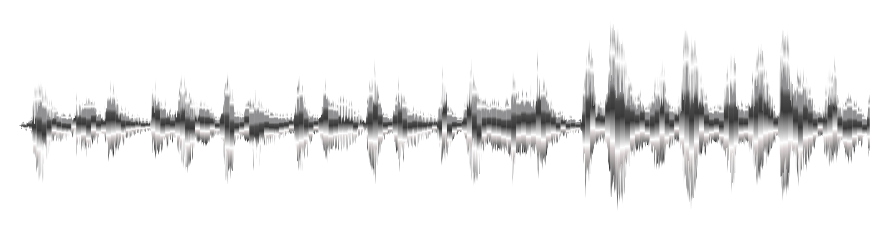

Register the clean track
Create a private song record before sending review copies.
 Saurus
Saurus
Private attribution for unreleased music
Saurus creates recipient-specific audio exports for demos, masters, and promos, then helps trace a leaked excerpt back to the authorized delivery it came from.

Lineage: clean master to private review copy
Workflow
Create a private song record before sending review copies.
Each recipient gets a protected audio copy tied to a private record.
Compare a suspicious excerpt against known exports and inspect the match.
Trust model
The audio points back to your workspace without exposing names in the file.
Verification can accept, reject, or decline when evidence is not strong enough.
The workflow starts with the suspected song, then checks which export fits.
Best fit
Studio path